田中裕 Portfolio Site
about me
パーソナル情報
田中 裕（たなか ゆう）
1986年02月02日生まれ / 34歳
経歴
- ・2007年3月 ： 東京アナウンス学院 放送声優科 卒業
-
・2009年12月 ： 携帯電話の販売代理店に就職
東京の専門学校を卒業後、23歳までは夢を追う為に役者活動に挑戦していました。
その後、山梨県に帰省し携帯電話の代理店に就職しました。
しかし、最初の職場では新人のフォロー体制が整っておらず、離職率の高さが深刻でした
その課題を解決する為、私自身も学んだ内容を積極的にアウトプットして新人のフォローを行いながら、人が辞めない様に取り組みました。結果、自分の所属店舗での離職者を異動先を含め０人に抑え社員定着率の向上に貢献しました。
この経験から職場内のスタッフとのコミュニケーションの重要性を学び、上司から新人教育の依頼を受けるようになりました。 - ・2015年4月 ： 携帯電話の併売店 退職
-
・2015年5月 ： 大手家電量販店のキャリアショップへ転職
前述の併売店では販売業務が専門となる為、収納や修理の他の手続きが業務の仕組み上行えず、
必然的に来店された顧客ニーズを満たせず歯痒い思いを幾度となく経験しました。
そこでより専門的な業務を行いたく、大手の携帯電話の販売代理店へ転職しました。
新しい職場では管理能力を認められ副店長に昇進しました。
スマホユーザーの飽和により新規顧客の獲得が難しい事が課題であった為、私は顧客のリピーター化に注力しました。
その甲斐あって法人顧客様から、「また貴方にお願いしますね」と気に入っていただき、毎月指名で20組〜30組の顧客紹介を頂けるようになりました。
結果、新店舗の販売実績を移転前の前年比150%の上昇に貢献しました。
視点を変えて業務にあたる重要性を学びました - ・2020年2月 ： 大手家電量販店のキャリアショップ 退職
- ・2020年3月 ： プログラミング学習開始
- ・2020年5月 ：プログラミングスクールTECHCAMPにて本格的にオンライン学習を開始
- ・2020年8月より現在転職活動中
2020年に学習したプログラミングスキル
TECHCAMP卒業後も、継続して学習を続けています
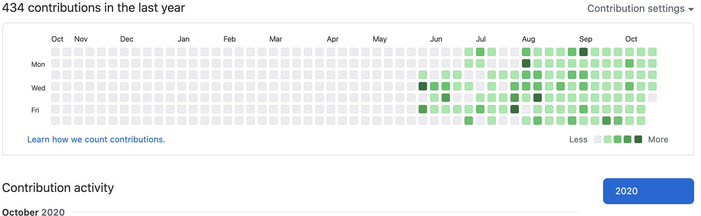
- 5月17日〜7月24日: TECHCAMP： HTML,CSS,Ruby,Ruby on Rails,JavaScript,jQuery
- 7月27日〜現在: 書籍,Udemyの動画教材で学習継続中 ：
どの様な業務をしたいか
多くの人の役にたつ直感的に使いやすいアプリの開発に携わりたいです。
その為にフロントサイド・サーバーサイドを問わずに、必要な言語やスキルを常に取り入れていける環境で働きたいです。
どの様なエンジニアになりたいか
10年培った接客業のキャリアを捨ててエンジニア転職を目指したのは、
「急速に進むIT化の中で、ユーザーの声を聞きITで解決するツールを開発したい」からです。
変化を恐れずに行動する
スマホとオンラインの普及によって、生活は以前と比べて飛躍的に便利になりました。一方で、誰もがITを使いこなせるわけではないと感じました。
そこでユーザーの声を直に聞き、その悩みをITで解決したいと考えました。
新しい事に挑戦する事は非常に刺激的で且つ楽しい為、そこから見える新しい景色があると考えています。それにより自分自身も大きく変化していけると思います。
自己PR
■自己PR
✔ 行動力
「やってみたい事は実践あるのみ」を常に意識しており、やらずに後悔するよりも何事もまずやってみる様にしております。
【直近1年の挑戦】
・プログラミング学習（GitHubは毎日草を生やしています）
・面接練習の主催
・定期的なQiita記事執筆
・ポートフォリオ品評会の主催
・ITパスポート試験の学習
・Twitterで学習した内容を呟く事を継続中
【過去に挑戦したこと】
・Googleアドセンスを使用してトレンドブログ運営（月間利益￥20,000）
・中古商品を専門にせどりに挑戦(月商￥250,000)
※後述参照
✔ 他者に物事を教える力
私は自身の知識・経験を積極的に他者に教えております。
初めて就職した会社では新人に対するフォロー体制がなく、深刻な離職率のある環境を経験しました。
その環境を改善すべく、私自身が得たノウハウで新人教育を率先して行い、異動先を含め所属店舗での離職者を0に抑えました。次第に上司から「新人教育をまたよろしくね」と、依頼されるようになりました。
Ruby on Rails
BreadLove
制作したアプリへのリンク
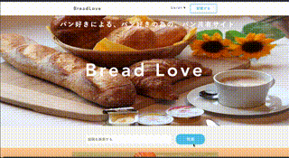 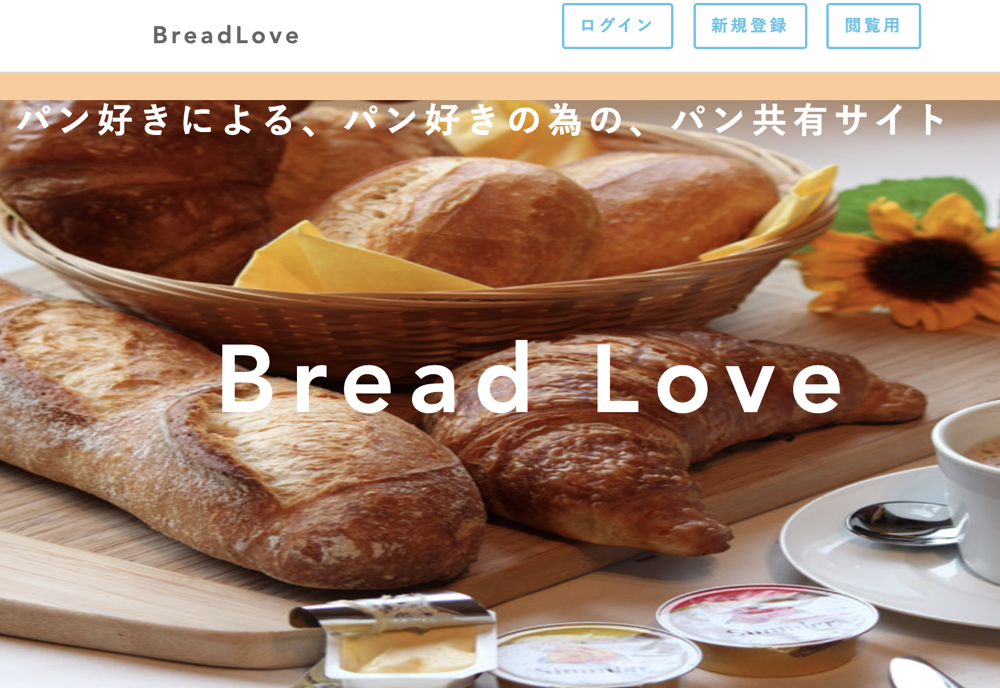アプリの概要
- ・パンの写真を投稿するアプリ
- ・好きなパン画像と、それを購入した都道府県を記載する事が可能
- ・投稿された写真にコメント記載可能
ソースコード
GitHub(BreadLove)こだわりポイント
- ・学んだRailsの定着率を上げる為に制作したアプリ
- twitterやインスタグラムと違い、一つのジャンルに特化したアプリを作成したかった
- ・AWSにアプリをデプロイし、EC2とS3を使用しています。自動デプロイ後に発生した本番環境の接続エラー対応は下記Qiitaに投稿
- →Qiita(本番環境に自動デプロイしたらwe're sorry, but something went wrong.エラーでアプリが使えない)
- ・ログイン者のみが投稿の一連の機能が使用できる為、ゲストログイン機能を実装
- ・GoogleMapAPIと連携して、実際のパン屋さんとGoogleMapで連携予定
使用したGem
- ・kaminari : ページネーション
- ・device : ログイン機能
- ・gretel : パンくず機能（部分実装のみ）
Shinobi-bot(LINEBOT）
アプリの概要
- ・入力した言葉に対しランダム発話を行うLINEBOT
- ・特定の言葉には設定した言葉で返事を返します
- ・herokuでデプロイしています
こだわりポイント
- ・AIに関心がある為、Techpit教材で学んだオウム返しBOTや楽天APIと連携したBOTではなく、自分で設定した言葉を返すBOTを作成したかった
- ・ランダム返信が被らないように台詞のレパートリーを30個以上に設定
- ・LINEスタンプにも反応するように改修中
フリマアプリ
（TECHCAMPチーム開発課題）
共同開発で制作したアプリのトップページ
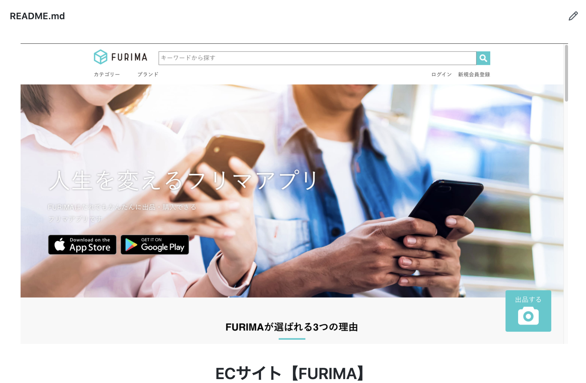アプリの概要
- ・メルカリ・ラクマを元にフリマのクローンサイトをチームで開発
こだわりポイント
- ・スクラムマスターから提案のあったペアプログラミング・モブプログラミングを導入し、チームメンバー５名合同でアジャイル開発を行いました
- ・trelloでタスク管理。挑戦したいタスクに参加し、完了したらタスクステータスを完了にする
- ・作業タスクを極小レベルで細分化し、作業タスクを詳しく可視化しました
- ・全員の成長を目標に約３週間で開発
Javascript
クイズゲーム
制作したゲームの実行画面動画
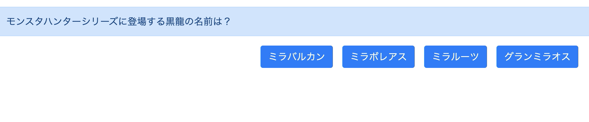アプリの概要
- ・Javascriptで動作するクイズゲーム
- ・４択問題で選択後に正誤判定の表示
- ・最終的に正誤数が表示される
こだわりポイント
- ・Javascript学習時に作成したゲーム
- ・window画面に正誤判定・正解数を表示
- ・初めてBootStrapを使用し、CSSは不使用
- ・BootStrapの利便性を把握し、CSS,SCSSを使わない効率的なアプリ作成を学習
Others
ポートフォリオ品評会に登壇
登壇したポートフォリオ品評会の風景
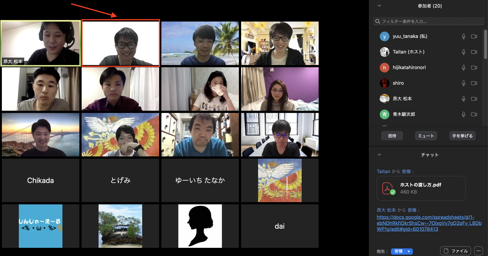 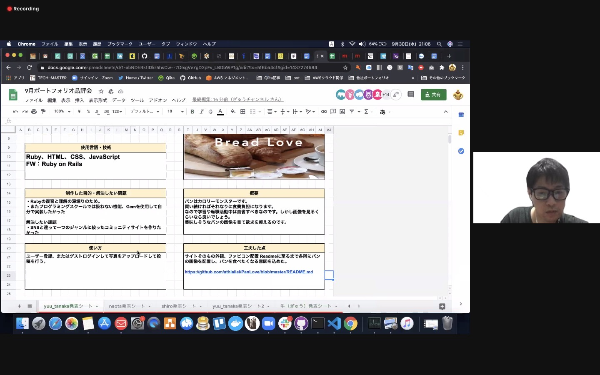こだわりポイント
- ・発表者6名・評価者含め２０名規模のポートフォリオ品評会に登壇し、トップバッターに立候補し発表
- ・不特定多数の前で発表する事で発表への自信がつきました。
- ・他者視点で評価をもらう事で、自分だけでは気づけない機能案や修正点に気づけました。
→着想の視点が面白いと評価された事で、次の作品を作るモチベーションにも繋がり、また登壇したいと考えています。
面接練習の主催
主催した面接練習の風景
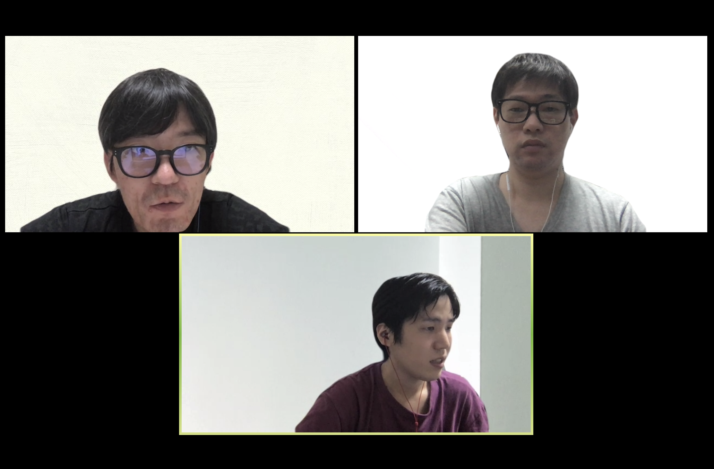こだわりポイント
- ・プログラミングスクールの同期に声を掛け少人数で実施
- ・少人数で行う事で、一人あたりの密度を高くして行う事を心がけた
- ・およそ2時間で終了し、情報共有や意見交換も行う
- ・定期的に主催予定
→一度できた縁は大事にする事を心がけ、長期的に良好な人間関係を維持しております
Qiitaへ技術記事投稿
投稿したQiita記事の一部
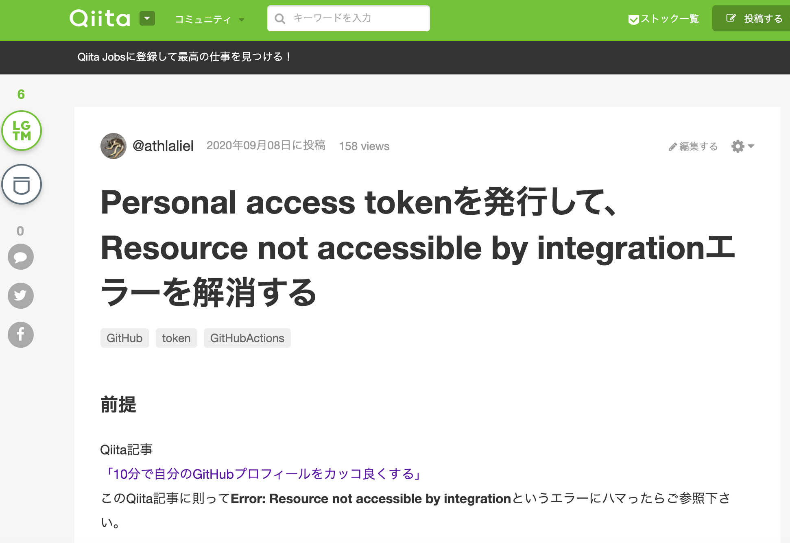{kind=link}
こだわりポイント
- ・知識の定着率を上げるために、発生したエラー事象に加え、解決策も記述しております
- ・自身が困った内容は別な誰かの助けになると考え、定期的な発信を続けていきます
→困難を乗り越えた経緯を忘れずに次に活かす為に記述しております
WordPressでトレンドブログを作成
Adsence広告で得た収益結果
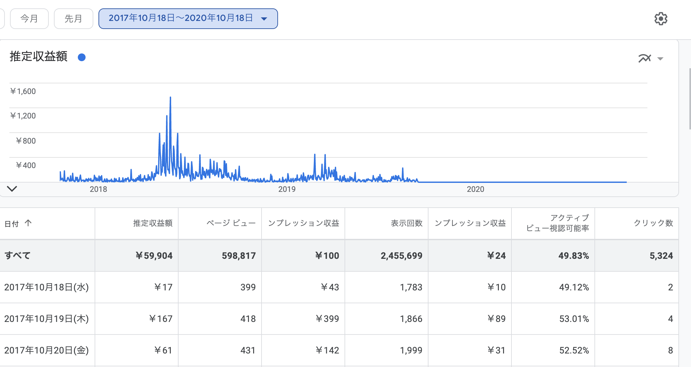
活動当時の注意や心境
- ・独学でレンタルサーバー・ドメインを学習・レンタルしブログ構築
- ・GoogleAdsence広告を記事内に表示させ収益源とした
- ・一記事分量は3000文字以上を意識して執筆
- ・運営当時はプログラミングの知識は一切なし
→約3年継続し、現在は閉鎖した為、収益画像のみ表示
中古商品を仕入れ、amazonFBAを使用して自動販売
仕入れツール使用図 & 収益図
 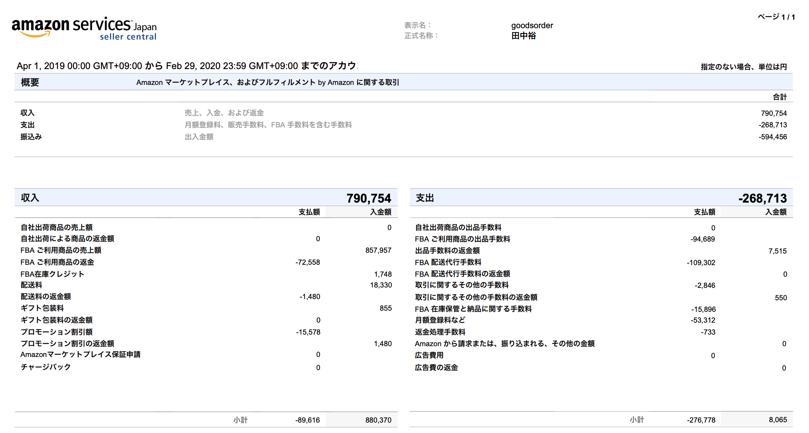
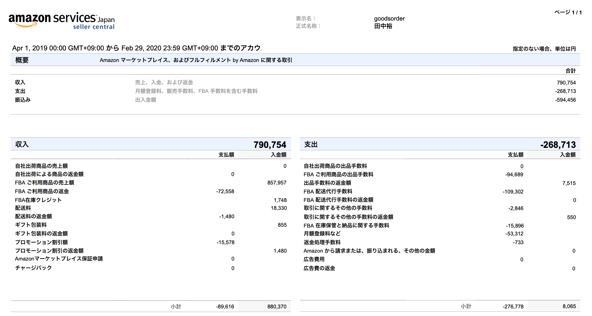
活動当時の注意や心境
- ・本業終了後、休日を利用して都道府県を跨いで仕入れを行い時間を有効活用
- ・時間を忘れて仕入れに勤しむ事で、商品目利きの幅が広がった
- ・時には仕入れの判断ミスから不良在庫を抱えてしまい、在庫処分の為に値段調整に四苦八苦
- ・値付けの厳しさを知り試行錯誤を繰り返し、販売できた時は格段の嬉しさを感じた
→上京に伴い自家用車を手放した為、現在は活動停止